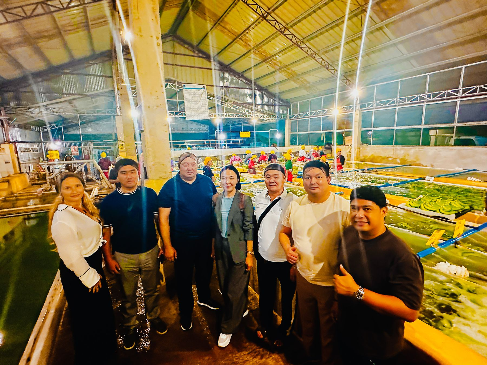
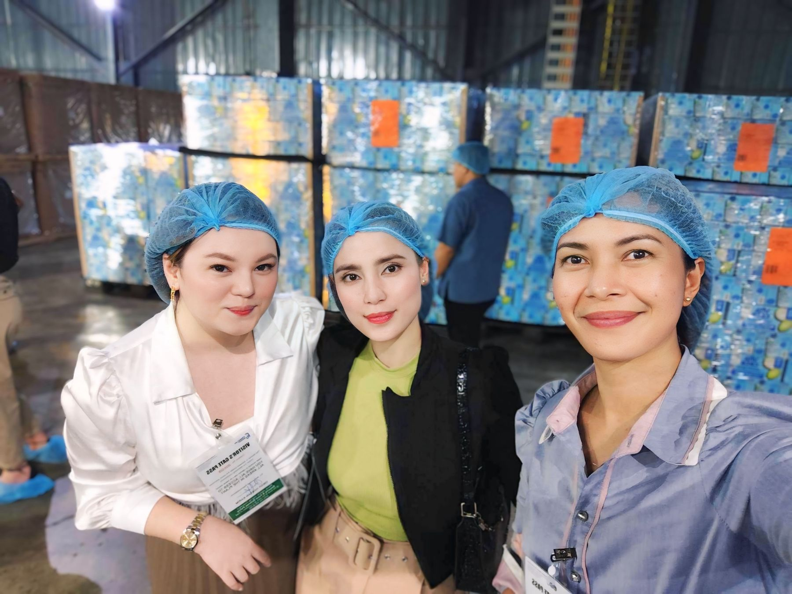
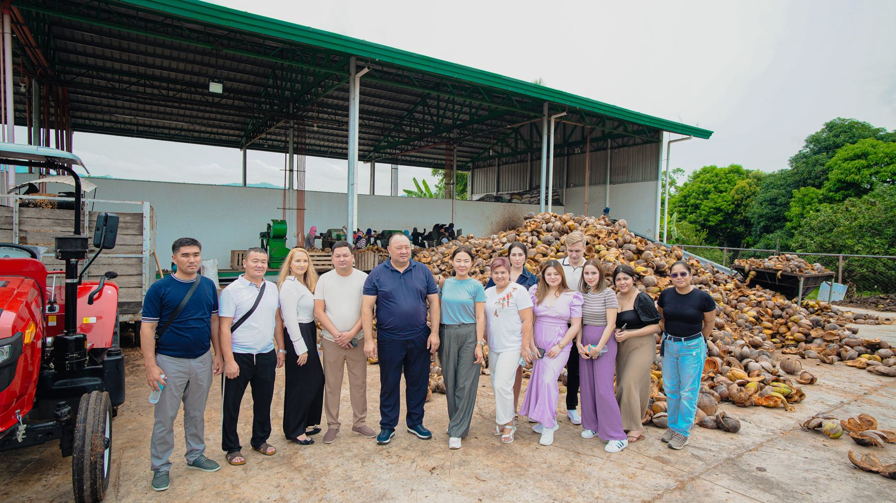

Кокосовая продукция
TRADEPRO DYNAMICS CORP. / PHILIPPINE ORIGINПромышленные и пищевые решения100% Органическая кокосовая продукция
Стандарт Fresh-Centrifuged: нулевая химическая обработка, без гидрогенизации (Non-RBD), сохранение до 50% лауриновой кислоты.
 Тематическая иллюстрация · Сгенерировано ИИ
Тематическая иллюстрация · Сгенерировано ИИ01 / FRESH-CENTRIFUGEDОрганическое кокосовое масло (VCO)
Холодное центрифугирование в течение 48ч со сбора ореха. Идеальная прозрачность, тонкий природный аромат, нулевое перекисное число.
Опт: бочки 200 л / IBC 1 000 л
Своя марка: стекло 300 мл, 500 мл, 1 л
02 / ASEPTIC PACKКокосовая вода и сливки (Опт)
Натуральный изотоник и кулинарные сливки. Асептический розлив с сохранением полного минерального и электролитного профиля.
Асептические бочки 200 л / ISO-танки 20 т
Срок хранения: 18–24 месяца в закрытой таре
03 / AGRO-INDUSTRIALКойра и кокосовый субстрат
Прессованные блоки 5 кг и маты для промышленных тепличных хозяйств и гидропоники. Промытые и непромытые фракции.
Блоки 5 кг / брикеты 650 г
24–26 т на контейнер 40 ft HC
ДОПОЛНЕННЫЙ КАТАЛОГ
Дополнительная кокосовая продукция

RETAIL / PRIVATE LABELКокосовые чипсы
Хрустящие кокосовые снеки для оптовых поставок и программ private label.

CONDIMENTSУксус из кокосовой воды
Натуральный уксус для HoReCa, розничных и промышленных форматов.

FOOD INGREDIENTSКокосовая стружка
Экспортный ингредиент для выпечки, кондитерской отрасли и пищевого производства.
ORIGIN TO PORTОт урожая до мировых рынков.
Приёмка и отбор свежего сырья перед переработкой.
Модель процесса. Фактические сроки и параметры требуют подтверждения.